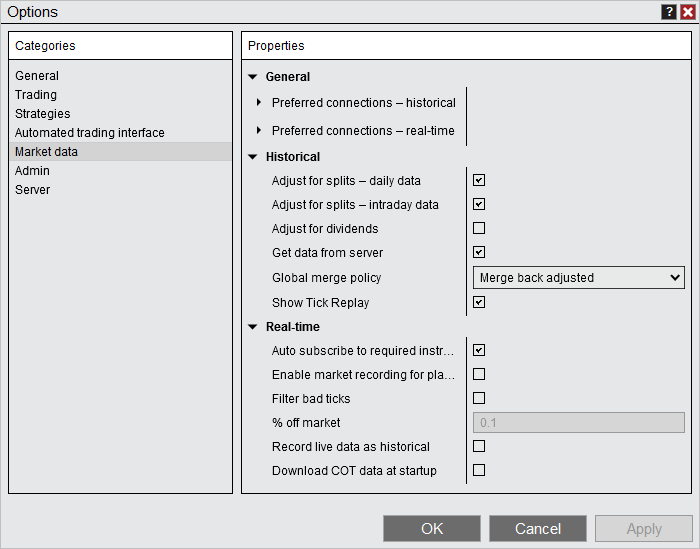

|
<< Click to Display Table of Contents >> Market data |


|
Market data
|
<< Click to Display Table of Contents >> Market data |
|
The Market data section sets options related to market data and database management.

General |
|
Preferred connections - historical |
Sets a connection to be used by NinjaTrader for historical data if it is connected. You can choose a separate preferred connection for each instrument type, expand the triangle to the left of the property name to set a preferred connection. |
Preferred connections - real-time |
Sets a connection to be used by NinjaTrader for real-time data if it is connected. You can choose a separate preferred connection for each instrument type, expand the triangle to the left of the property name to set a preferred connection. |
Historical |
|
Adjust for splits - daily data |
Enables or disables split adjusting historical data for daily data. Some providers already split adjust their daily data and you do not need to adjust it a second time if your provider handles it on their side. Please see this help guide page under the section "Understanding splits and dividends" for more information. |
Adjust for splits - intraday data |
Enables or disables split adjusting historical data for intraday data. Some providers already split adjust their intraday data and you do not need to adjust it a second time if your provider handles it on their side. Please see this help guide page under the section "Understanding splits and dividends" for more information. |
Adjust for dividends |
Enables or disables the adjustment of historical data to account dividends, for use with any function that requires historical market data |
Get data from server |
Enables or disables the retrieving of historical data from the data provider's server. When disabled, only local data stored on your PC will be used. |
Global merge policy |
Sets the merge policy for Futures contracts:
Do not merge: historical data is not merged
Merge back adjusted: NinjaTrader automatically merges and back adjusts historical data
Merge non back adjusted: NinjaTrader automatically merges, but does not back adjust, historical data
For more information on merge policies, see the "Understanding merge policies" section on this page. |
Show Tick Replay |
When enabled, allows "Tick Replay" to be configured from a data series menu. Please see Tick Replay for more information. |
Real-time |
|
Auto subscribe to required instruments |
Sets whether NinjaTrader will automatically subscribe to market data for any instruments requiring data throughout the platform to properly calculate PnL when trading non-USD pairs |
Enable market recording of playback |
Enables or disables market data recording for use with the Playback Connection |
Filter bad ticks |
Enables or disable filtering of bad ticks. This filtering only works on real-time data and will filter ticks that are a greater then a set percentage away from the last tick. Set the percentage for filtering with the property: "% off market". Note: If NinjaTrader receives 2 or more ticks that violate the tick filter we will no longer filter the ticks as the market is assumed to have legitimately gapped up or down. |
% off market |
Sets the real-time tick filter offset percentage (0.1 equals 1/10 of a percent) |
Record live data as historical |
Enables or disables the storage of incoming real-time Chart data to your local PC for future historical data requests. If you are connected to a provider that supports historical data, disable this feature. |
Download COT data at startup |
Allows downloading of Commitment of Traders data for use with the COT indicator |